Initial Setup
The file vault is available at all locations within a system. It must be activated by using the “File Vault Active” toggle on the System Settings screen. This toggle doesn’t affect the actual functions of the file vault, it only turns on or off the main menu icon/link.
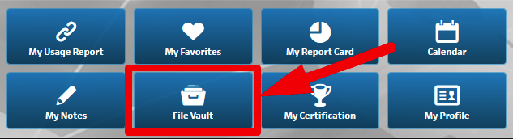
Access Level and Role Definitions
System Admin (Super User B):
This user has full admin privileges over files and folders within the file vault and can assign privileges for all locations within their systems or by individual locations. This user can also define which locations have access to folders or files.
System Admin (Super User C):
Similar to Super User B, this user has full admin privileges, but is restricted to their own system and locations. Also, a Super User C cannot delete or edit files/folders created by a Super User B.
Location Manager:
This user has similar privileges to System Admins, but is restricted to their own location. Managers can optionally (If rights are granted by System Admin for that location) deactivate folders/files added by a System Admin.
Location User:
This base user has limited privileges and may only view or download files from their own location.
Here is a chart of the above information:
| Access Level | 2 & 3 | 4, 5 & 6 | 7-12 |
|---|---|---|---|
| Folder/File Create | (Any/All Locs) | (Own Loc) | |
| Folder/File Edit | (Any/All Locs) | (Own Loc) | |
| Folder/File Delete | (Any/All Locs) | (Own Loc) | |
| Folder/File View | (Any/All Locs) | (Own Loc) | (Own Loc) |
| Folder/File Activation Status | (Any/All Locs) | (Optional - Own Loc) |
= Access Level 3 does not have access to Edit, Delete or view Activation status on items created by Access Level 2 (Super User B)
Accepted File Types:
.pdf
.txt .rt .rtf
.html
.doc .docx
.xls .xlsx .csv
.ppt
.jpeg .jpg .gif .png .bmp .tiff .tif .pic .pict
.vsd .vst .vsw
.mp3 .m4a .mpg .mpeg .avi .mov .wmv .mp4 .flv
Upload file size limit:
60 MB
Getting Started
Here is your File Vault as it is viewable to all users. This is an example of a File Vault with NO content in it.
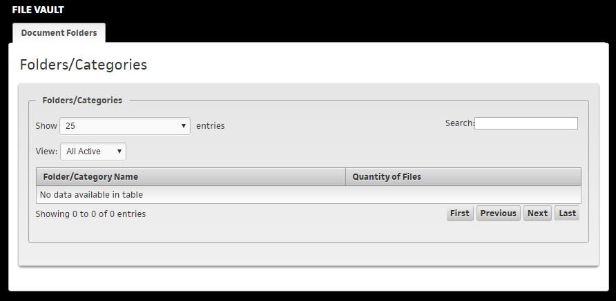
New Folder Creation
As a Location Manager or User with privileges to add files to the File Vault, they will do so in the File Vault itself:
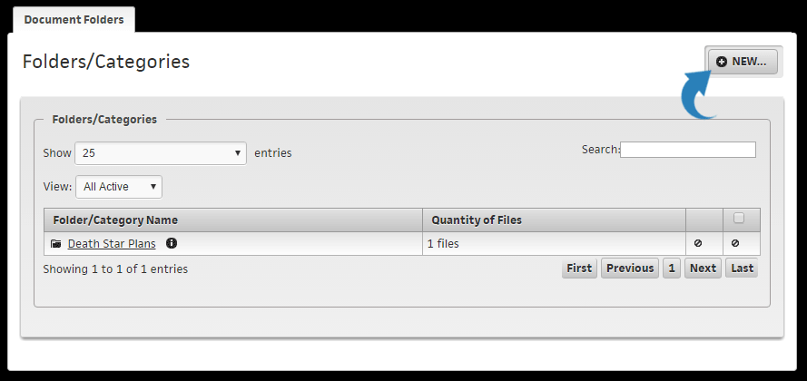
If you are a System Admin, to create files and folders you would access the File Vault Admin area under the Super User Dashboard, 412 - File Vault Management:
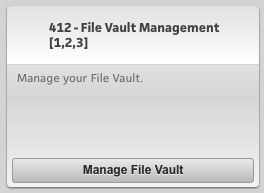
System Admin Screen
In the Admin area, you will first select a System in which you want to manage the file vault files.
Second, if you wish to search for a specific Folder or File, you can do so here. If you want to see all available Folders and Files for the system, leave these fields blank.
After searching, results can be filtered further by location. By selecting a location, only folders active at that location will show.
Step 1: Select your System and search criteria:
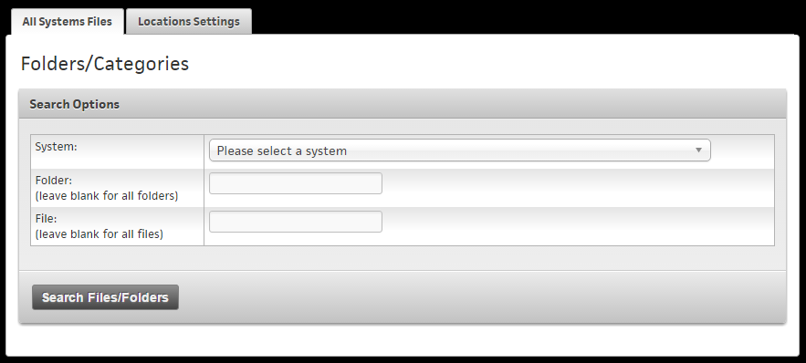
Step 2: Review your results or filter by location:
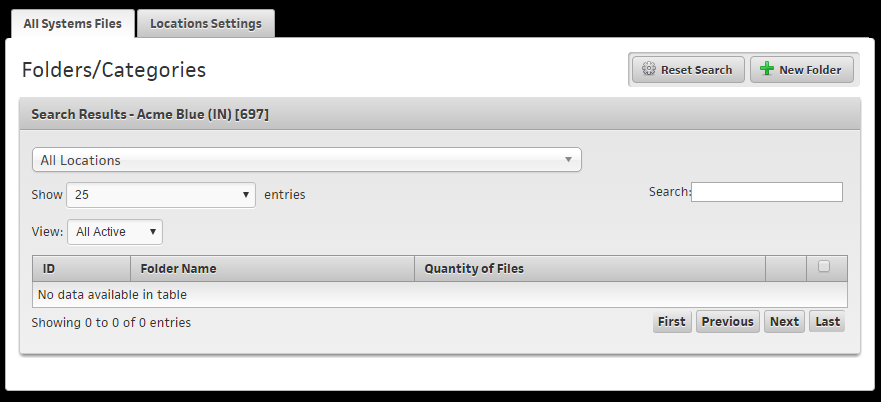
To create a new folder click on "New Folder" icon at the top right.
Enter your information for the folder and then whether or not you would like ALL newly created locations in your system to have access to this folder (It will be checked by default, or set to Yes)
Next, specify which locations can access the new folder (In our example there is only 1 location available, so only 1 is on the list).
To the right of the location access, the System Admin can also grant authorization for a location manager to deactivate this folder (or as we'll see later, file.)
Success! The folder has been created - Great Job: 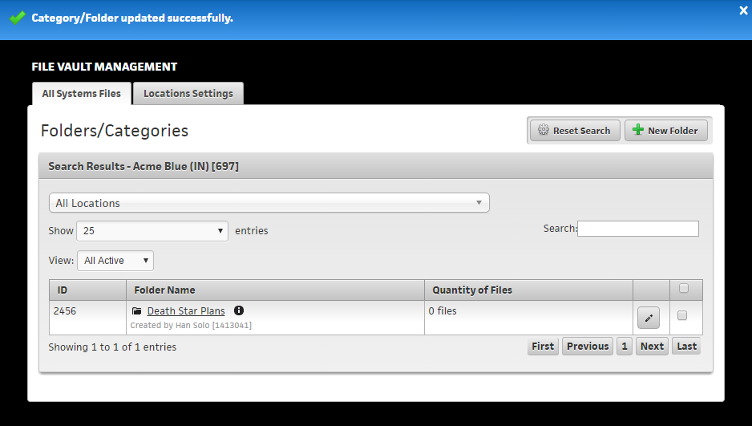
If you need to make any changes to your Folder, you can click on the pencil icon to edit it.
File Creation
To create a file, click into any folder and then click on "New File" at the top right of the screen.
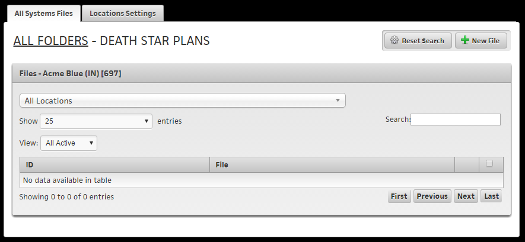
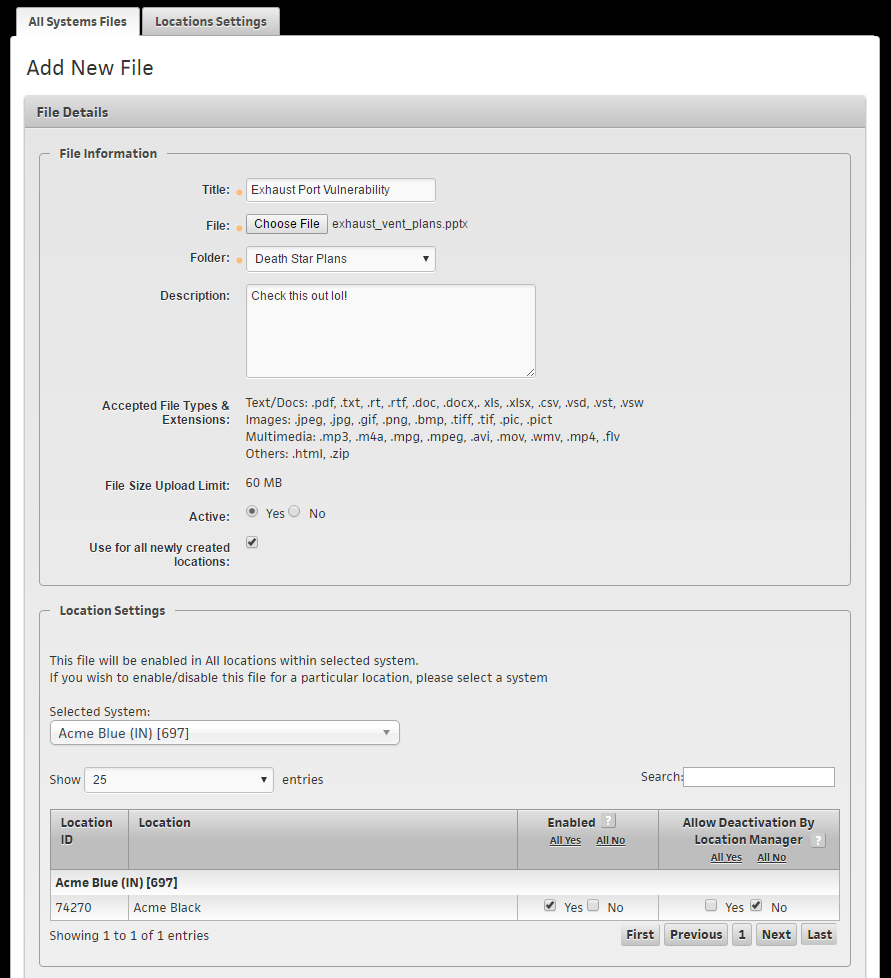
The steps to add a file are similar to adding a new folder, except now you choose a file from your local device to upload to the file vault.
File size specifications are right on the screen if you cannot remember whether a file type is accepted or not.
You here you can also repeat the exercise of which locations can access the file, and whether or not the location managers can deactivate the file (at their location only.)
Sucess! We have now added a file to our File Vault: 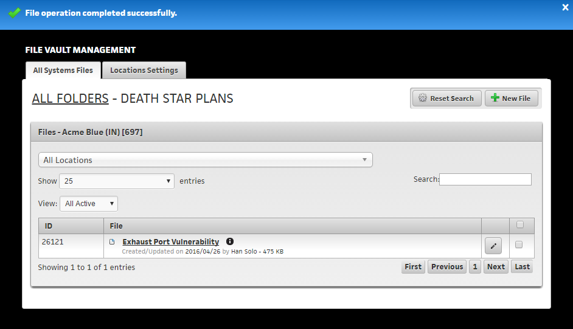
Locations Settings
System admins also have the ability to restrict individual locations (to further override the folder and file specific access controls we covered above.). If restricted, a location manager would not be able to manage files or folders and would only be able to view and download files.
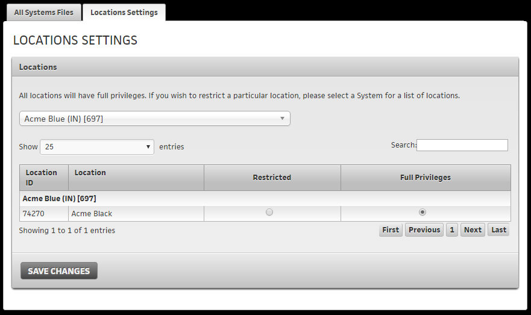
And finally here is what our file vault looks like in the System.
Top View: 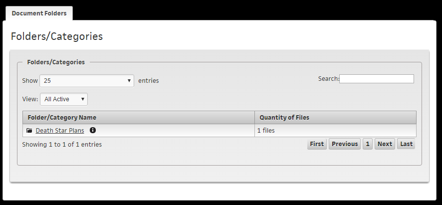
Clicking on a Folder View: 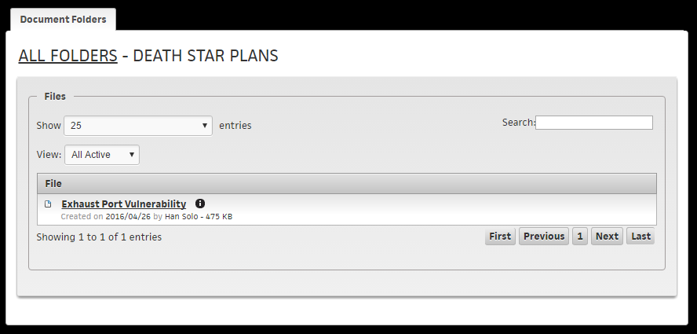